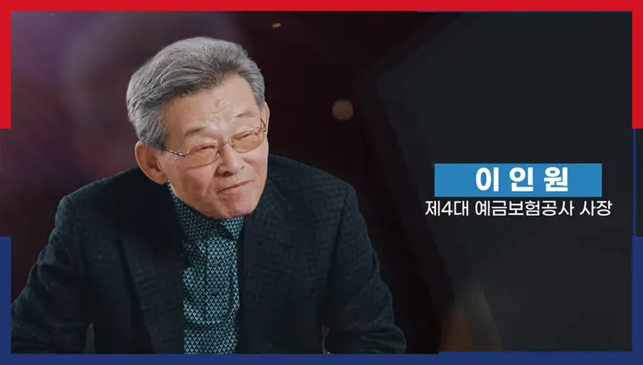
1부
금융안전망의 시작,제도를 처음 만들던 사람들
2부
구조조정의 소용돌이,무너진 곳에서 다시 일어설 길을 찾다
3부
한 단계 높아진 예보,제도의 수준을 끌어올리다
4부
정리하고 되찾는 일,공적자금의 값어치를 증명하다
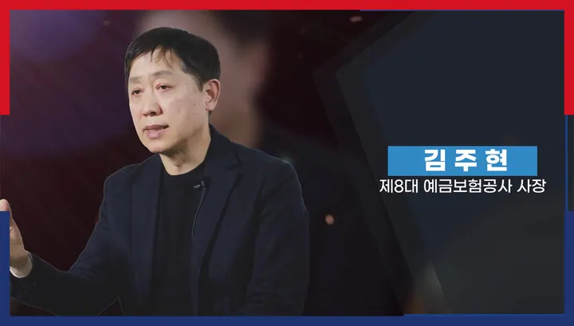
김주현 제8대 예금보험공사 사장부실저축은행 구조조정 / 가교저축은행 설립 및 매각 등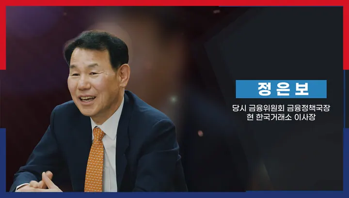
정은보 한국거래소 이사장·당시 금융위원회 금융정책국장상호저축은행 구조조정 특별계정 설치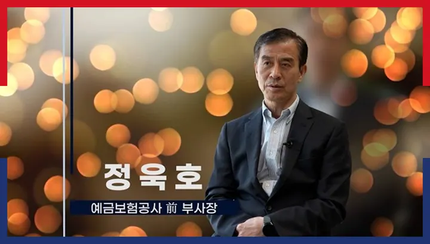
정욱호 前 부사장부실저축은행 특수자산 관리 전담 부서 설치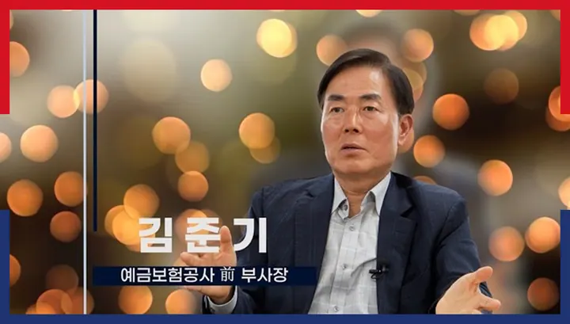
김준기 前 부사장저축은행 부실 사태 정리 / 후순위채 분쟁조정위원회 설치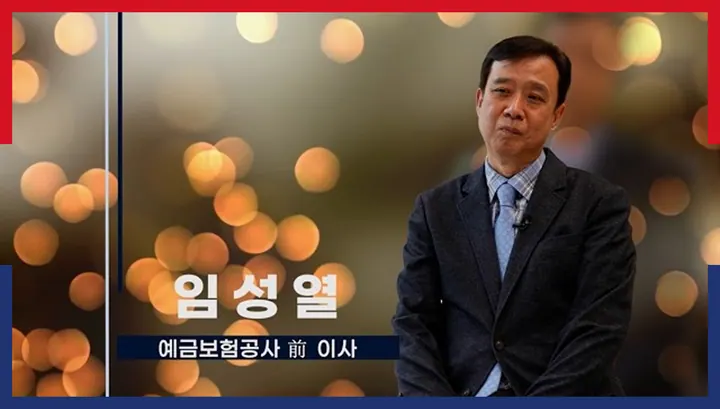
임성열 前 이사차등보험료율제 전면 시행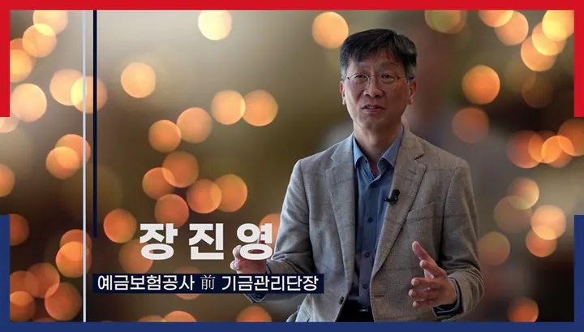
장진영 前 기금관리단장저축은행 부실 사태 정리 / 가교저축은행 설립 및 매각5부
맡은 일을 끝내며,위기에 늘 대비하는 체계를 만들다
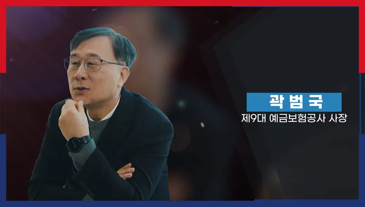
곽범국 제9대 예금보험공사 사장우리금융 민영화(과점주주 매각) / KDIC 글로벌 교육센터 개원 등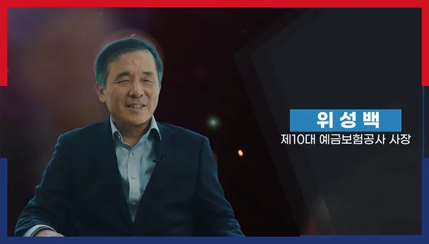
위성백 제10대 예금보험공사 사장자체정상화·부실정리계획(RRP) 제도 법제화 / 착오송금반환지원 제도 시행 등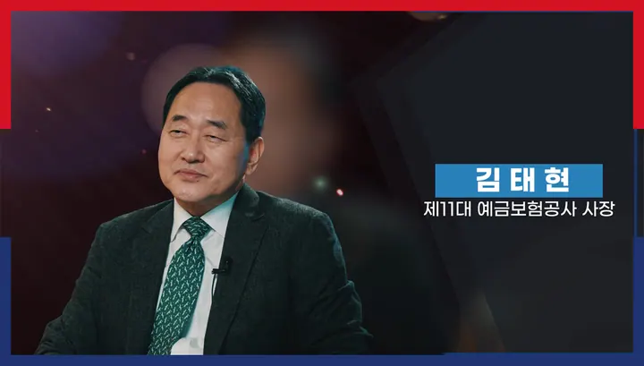
김태현 제11대 예금보험공사 사장대형금융기관의 RRP 제도 시행/ 금융안정계정 도입 추진 등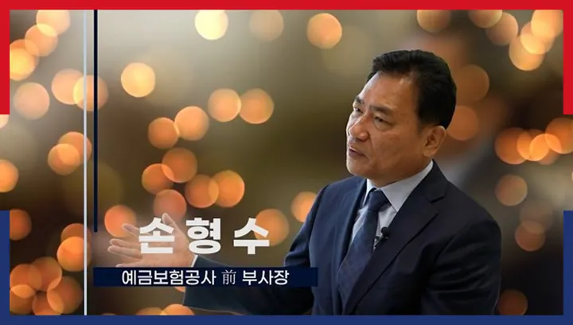
손형수 前 부사장자체정상화·부실정리계획(RRP) 제도 도입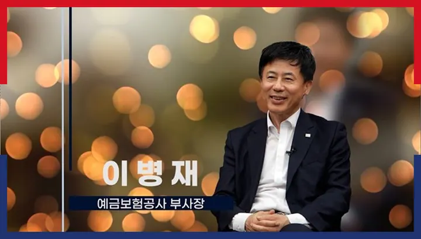
이병재 본부장상호금융업권 건전성 제고 / 금융안정계정, 신속정리제도 등 정리제도 고도화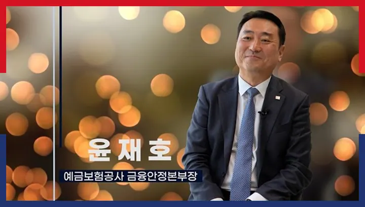
윤재호 부장국내 최초 가교보험사 설립 / 서울보증보험 IPO6부
새로워지는 예금보험,다음 신뢰를 준비하다
다음 쪽
30년 주요 성과